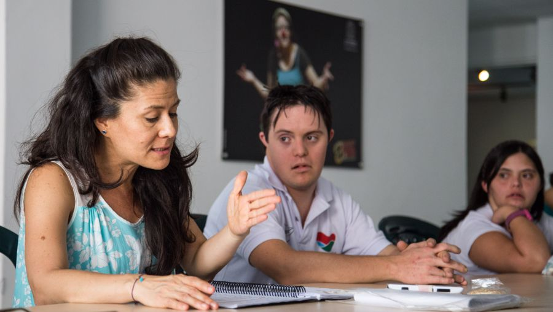
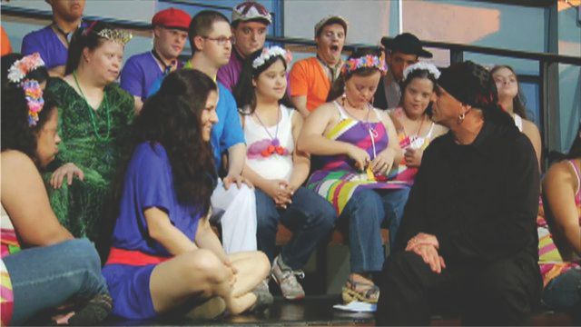
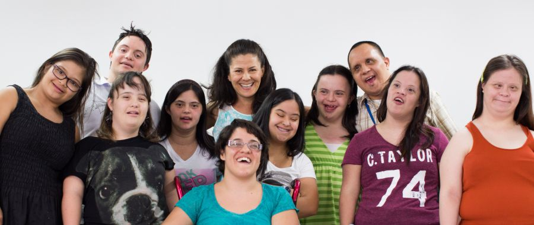
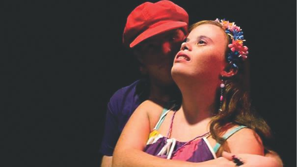
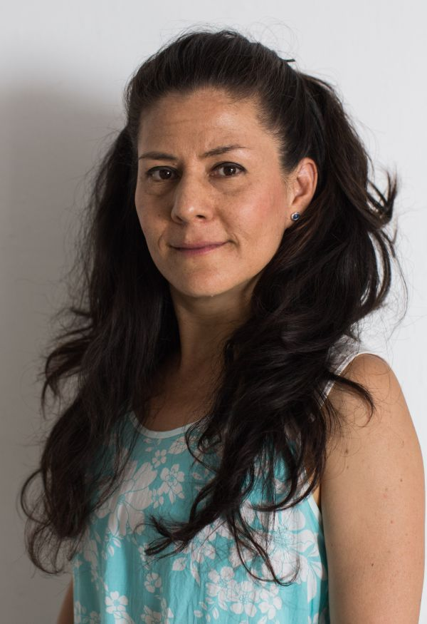
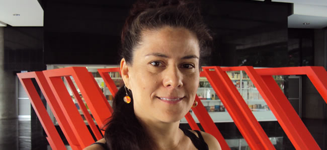
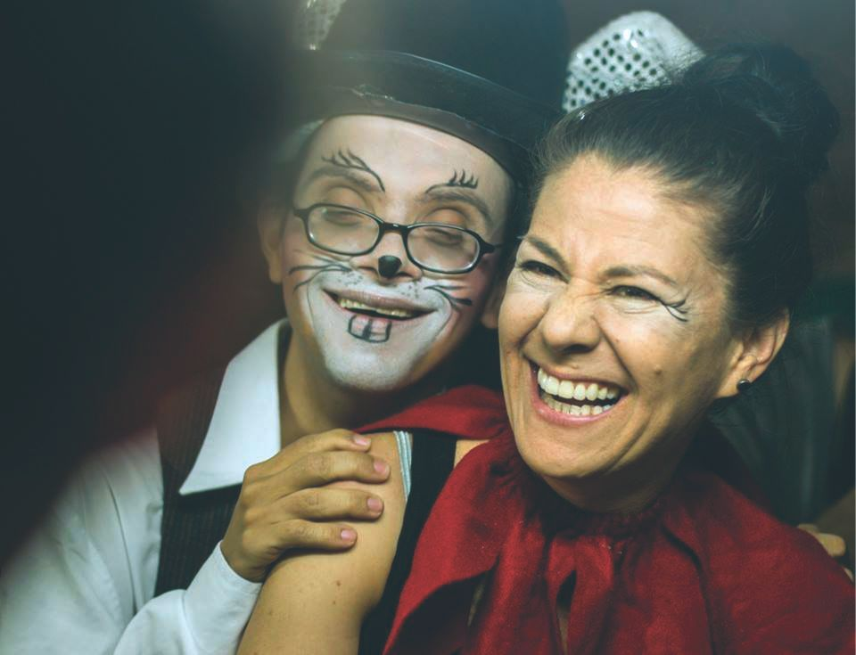
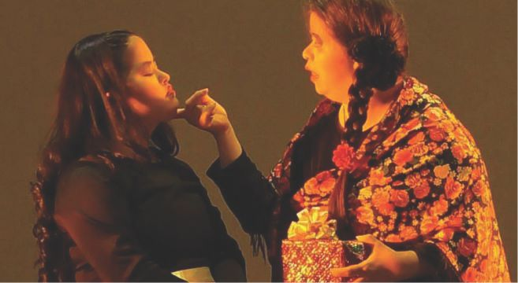

Beatriz Duque y su Teatro El Grupo, 10 años
Una mujer de perrenque
entre los santos inocentes
Por: Cristóbal Peláez González
Transcripción: Karen Crespo
“Hay otros mundos, pero están en este”.
Paul Eluard.

Administra, gestiona, escribe, enseña, dirige; pero su papel principal es ser una líder capaz de transformarse en madre, hermana y confidente. Ha logrado introducir a sus muchachos de El Grupo en el panorama teatral de la ciudad, con una programación permanente que circula por una veintena de salas. Y ahora, gozando de un admirable nivel artístico y estructural, anhelan su propio espacio de autoprogramación, dotado de teatro y taller para elaborar utilería, escenografía y vestuario. Además de un bodegaje, por supuesto, pues ya consolidan un repertorio de cinco montajes, con casi doscientas representaciones… Un logro que merece palmas.
Sus sueños van aún más lejos: viajar y compartir escenario con otras culturas. El Grupo es ya una navegación de diez años, donde la emoción y las alegrías también se han visto enturbiadas por ligeras sensaciones de desesperanza. “Sobre todo cuando algunas familias —dice Beatriz— ponen en duda mi rol. Eso es doloroso porque yo entrego demasiado, sin pedir otra recompensa que no sea la emoción”.
Beatriz labora ad honórem. El Grupo es el lujo que se permite pagar con los ingresos que le reportan sus clases en las facultades de Arte y Medicina de la Universidad de Antioquia. Con los exiguos ingresos de taquilla, los esporádicos —y modestísimos— aportes de donantes —familia—, y las rifas, se costean transporte, refrigerios e insumos de vestuario y utilería. De pronto una que otra beca, de esas que llegan por allá cada que renuncia un papa.
Estricta como es, ha aprendido a no sufrir por el sentido de la perfección que la agobiaba en sus inicios, pero afirma que no es negociable su alto nivel de exigencia para que una representación salga según lo planeado. En su fortaleza pedagógica, detesta la reiterada autovictimización. “Me aterra, muchachos; me aterra, muchachas; que nos sintamos débiles, incapaces. ¿Pobrecito el bobito? ¡No! ¡Vamos! ¡Somos capaces y podemos hacerlo! ¿Que a Sara le da miedo salir a escena? ¿Pánico escénico? Ya lo resolverás, para eso estás aquí”.
Describe de un modo único lo que ocurre con la muchachada cuando ella se sale del margen —vade retro, Beatriz Duque—. “Se silencian. Me miran con esos ojos gigantes, callados. Entonces yo los miro, respiro, hablo serena; me miran tranquilos, se sonríen, me sonrío, nos abrazamos”.
Los santos inocentes. El otro día una chica me definió la eternidad. 'La eternidad es cuando no hay ensayo'.
“Salimos muchas noches en gallada a divertirnos, compartiendo vida de grupo. Solemos ir a ver teatro; es la maravilla. Tomamos cerveza, celebramos. Para ellos, el teatro es, sencillamente, VIDA. Y agrega, en tono realismo mágico: “cuando llegamos de Chile teníamos el pecho henchido, el corazón gigante. Al salir del aeropuerto no caminábamos, flotábamos. Se nos había cambiado el cuerpo, la expresión, la espalda, la mirada; cada uno de nosotros medía como tres metros”.
PRIMERA PARTE
“Estudié el bachillerato en la Normal de Envigado y, desde allí, vivía todo el tiempo encarretada con lo artístico: tocaba flauta, bailaba, montaba obras de teatro, pertenecía a la tuna; nunca me quedaba quieta. Pero siempre supe que iba a estudiar Psicología Infantil. Cuando nos dan la asesoría en el colegio para elegir carrera, nos ponen una lista de posibilidades y la psicoorientadora habla de 'Educación Especial'. '¿Y eso qué es? ¿Para qué es?', pregunto. 'Para trabajar con personas con discapacidad cognitiva'. '¡Ay, yo quiero eso!'.
Pensé entonces en mi tía Adela, 'Adelita', con discapacidad, ya mayor; una niña atrapada en un cuerpo tan grande. Ella iba a mi casa, yo le pintaba las uñas, la peinaba, jugábamos… Significó el enganche con ese tipo de población.
Inicié la carrera de Educación Especial en el Tecnológico de Antioquia, pero sabía que la mejor manera de llevar mi práctica docente era a través del arte y me puse a estudiar la Licenciatura de Artes Plásticas, en la Universidad de Antioquia, y de manera paralela hice mis cuatro años de formación teatral en la Escuela Popular de Arte, EPA. También hacía danza con el Ballet Folklórico de Antioquia y empecé allí a ser profesora de ballet con las niñas.
En ese transcurso de tiempo de formación personal, hubo unas experiencias pequeñas y cortas. Estuve con un grupo de teatro de chicos con discapacidad, que se formó en San Cristóbal. Era muy duro para mí porque ese tipo de población te absorbe mucho y, energéticamente, yo quedaba muy desequilibrada, muy descompensada. Tanto que hacía un año de trabajo y tenía que parar otro; la energía no me daba. Me asaltaban las preguntas. '¿Será posible? ¿Será que sí entienden?'. Tenía también el deseo de que fuera posible y sabía muy dentro de mí, que sí lo era. Pasa el tiempo y mirá, sigo en esto, no paro de trabajar, ni de estudiar, ni de bailar”.

El Grupo, una década de viaje
“Desde que terminé Educación Especial, en el año noventa, me dije: 'quiero hacer un grupo de teatro con muchachos con síndrome de Down'. En una capacitación que nos dieron, llega Silvia Zuluaga, músico-terapeuta que venía de trabajar en el Centro de Servicios Pedagógicos de la Universidad de Antioquia. Ella tenía un trabajo hermosísimo con sordo-ciegos y me invitó como profesora de teatro. Allí se atendían 450 niños, niñas, adolescentes y jóvenes con discapacidad cognitiva, motriz, sordos, ciegos; era un proyecto impresionante. Además, las profesoras eran las licenciadas en educación especial de más alto nivel intelectual y académico. El trabajo era maravilloso porque siempre se iba más allá; había un equipo interdisciplinario. Imagínate en lo que iba el nivel, que la gente ya entendía que el arte tenía que ser parte del proceso de formación; de rehabilitación en algunos casos. Empiezo teatro con los chicos más grandes, que se llamaba grupo prevocacional. Allí decidían si querían hacer deporte, o actividades manuales, o arte. Tuvimos un primer grupo que se llamó Sueños de Colores y presentamos, en el Teatro Camilo Torres de la Universidad de Antioquia, nuestra primera obra: Olowayli y el rey de los pájaros, de tema ambiental, a partir del texto de Javier Carbonero.
Aquella función fue memorable porque era la primera vez que esos profesionales, esas familias, esos muchachos y esta ciudad, veían una obra de teatro de ese nivel con estos chicos; porque siempre las profes que hacían teatro con ellos, eran licenciadas o eran educadoras, pero no eran artistas. Y yo había tenido toda la formación en arte. Además, práctica de escenario y mucho kilometraje como espectadora de las salas de teatro de la ciudad. Los espectadores se quedaron asombrados, muchos lloraban; no lo podían creer.
Al año siguiente, la universidad cierra el Centro de Servicios Pedagógicos por cuestiones administrativas que uno nunca entenderá, y los muchachos... váyanse para la casa o acomódense por ahí donde puedan. Lo que se había logrado retrocedió.
Me dije: 'no, yo no voy a dejar perder este trabajo y este talento'. Había constatado que era posible. Todos los muchachos de Sueños de Colores sabían leer y escribir. Además, comprendían, interpretaban. Me dije: 'estos son; con estos muchachos voy a cumplir mi sueño de tener un grupo de teatro'. Empecé a llamar a cada familia de los que hacían parte del grupo.
—¿Cómo?
—No sé.
—¿Dónde?
—No sé.
—¿Cuánta plata?
—No sé. Yo solo sé que voy a seguir. Si usted me dice que voy a contar con usted, yo resuelvo lo otro'.
De dieciocho, llegaron nueve. Nos empezamos a llamar El Grupo y encontramos lugar de ensayo en la Corporación Casa Taller Artesas. Poco tiempo después, en la Biblioteca de La Floresta. Luego, en Canchimalos; luego, en el Teatro El Tablado; y, finalmente, en el Centro Cultural de la Facultad de Artes. Ahí estamos ahora.
Siempre, como colectivo independiente, tenemos que autogestionar, claro. Pero que no sea otra entidad, ni las mismas familias las que saquen plata para financiarnos porque, de alguna manera, nos tocaría cumplir con los deseos del que está dando”.

Amores imposibles
“Ahora haremos nuestro primer montaje original, Amores imposibles, a partir de las investigaciones de un grupo de chicas de Educación Especial, que querían indagar sobre la vida afectiva y sexual de los jóvenes artistas con discapacidad del teatro El Grupo. Hicieron una serie de talleres: cómo ven el amor; qué es el amor; qué es la sexualidad; y hacen un recuento desde la infancia hasta hoy. De ahí han salido historias, narraciones de vida. Ya construimos seis momentos que vamos a representar como danza-teatro y ya escribimos para cada escena las letras de las canciones, que esa es otra característica de nosotros: todas las obras tienen música original.
El amor ha sido realmente nuestro hilo conductor en estos diez años, a excepción de Alicia. Historias de amor imposible que han sido el común denominador en la historia de sus vidas, porque los padres piensan que sus hijos no crecen, no se pueden enamorar, no pueden tener sexo, no pueden tener una vida íntima, no pueden… Y mentiras que sí pueden. En estos días, Estefanía —Estefanía, ¿te acuerdas de ella?, la que es así, muy hermosa, muy pinchada— me decía:
—Beatriz, necesito hablar contigo.
—¿Sí? ¿Y qué?.
—Es que mi novio quiere hacer el amor conmigo.
—¿Y tú qué quieres?
—Es que no sé lo que van a pensar mis padres; ellos se van a angustiar mucho.
—Mira, primero tienes que resolverlo con tu novio, saber si tú quieres también. Él no te puede obligar.
Fue a decirles a la mamá y al papá. El acompañamiento ha sido muy interesante porque ya pueden hablar del tema, antes no. Antes eran los bobitos, los subnormales que estaban ahí; que no se toquen, o aquello que la gente siempre ha pensado: 'es que ellos son muy sexuales'. No, son tan sexuales como todos. Lo que ocurre es que se les ha excluido; son más sinceros y están más dados a dejarse llevar por el impulso, pero también hay que prepararlos para el control, porque yo no puedo tirarme encima de vos porque me gustás.
En este momento estoy trabajando el concepto de las capacidades diversas, porque es precisamente lo que los muchachos han demostrado: tienen en su memoria cinco obras con personajes completamente diferentes los unos de los otros, con temas musicales diferentes, con coreografías diferentes. Yo, Beatriz Duque, digo: no soy capaz de estar sentada con un grupo de filósofos debatiendo sobre la existencia del ser. No, eso no se me da. No tengo el seso para eso y no sé qué entiendo; nada, sin duda. En ese terreno sería una discapacitada también. Entonces es entender que son maneras de conocer el mundo, de vivir y de estar en el mundo. Estos muchachos han demostrado que la discapacidad es un concepto equivocado.

En el Teatro El Grupo, el 80% son chicos con síndrome de Down. Valentina Acosta, la chica en silla de ruedas, que tiene toda su capacidad cognitiva plena, quiere estudiar Filosofía pero no ha podido porque, por ejemplo, la universidad no tiene el examen adecuado para ella porque, mientras coge el lápiz y desdobla la hoja, ya se le fueron las dos horas. Hay dos chicos con un trastorno generalizado en el desarrollo, donde se involucran el movimiento y la comprensión; diferentes dimensiones de su ser. Y hay una chica, Habeidy, nuestra cantante, que es pura intuición; capaz de hacer una segunda voz, de subir, no se sabe cómo, pero ella lo hace. Tiene una discapacidad cognitiva leve; ella es una chica que sabe moverse bien en la ciudad”.
Siempre el teatro.
“Para mí el Teatro El Grupo es como una traba constante; es un estado de plenitud, de satisfacción, porque también es, de alguna manera, ir contra la corriente, contra lo convencional; eso me gusta.
Primero, está el reto de trabajar con un grupo de jóvenes con su lenguaje a veces no tan comprensible, donde uno ignoraba hasta qué punto estaban comprendiendo la historia, o quizá solo estuvieran ahí repitiendo unos textos. Eso pasaba al principio. Ahora sé que sí están comprendiendo, porque me pueden hablar de ellos claramente y de las situaciones, y compararlas porque también han vivido situaciones parecidas a las de los personajes. Al principio, eso era como una incógnita; ahora es una certeza.
En segundo lugar, ir contra la corriente en el sentido de que podemos ser un grupo independiente, incluso de las familias. Esto quiere decir que las decisiones, las situaciones al interior del teatro, las resolvemos nosotros mismos. Eso ha sido lo más difícil, porque a las mamás les ha costado. Se han dado cuenta de que sus hijos pueden ser adultos, pueden tener una vida independiente, pueden ser artistas, pueden salir del país sin ellas y que pueden demostrarle al mundo lo que son capaces. Son ellas las que los necesitan a ellos; son ellas las dependientes”.
SEGUNDA PARTE

¿Las deserciones las podemos señalar siempre como responsabilidad de la familia?
“Sí. Siempre. Te pongo el caso de una chica cuya familia no le reconoce una condición particular en su desarrollo y, por lo tanto, no me permitían que le llamara la atención. Querían que fuera la protagonista en todo. Claro, terminaron por apartarla. Me escribieron una carta donde me nombraban la peor del mundo”.
¿Celos?
“También”.
Porque el afecto se trastea hacia vos…
“Claro, yo me vuelvo la autoridad, como una voz de su conciencia. Tanto que las familias me utilizan como El Coco: 'Ah, ¿estás haciendo equis cosa? ¡Voy a llamar a Beatriz Duque!'. Pero hay cosas muy lindas, por ejemplo, una mamá me contaba que un día hizo un desayuno delicioso, se sentaron, terminan el desayuno y la mamá dice 'ay, este desayuno me supo a gloria'. Y Juan José dice, 'a mí me supo a Beatriz Duque'. Casi me pongo a llorar”.
Una cosa así es tan hermosa como la música.
“No los dejaban salir ni a Rionegro. Les decía a las mamás, 'ustedes están locas. Tranquilas que los muchachos ya son adultos, ¿cuál es el miedo?'. Ay, es que de pronto les pasa algo'. 'Les pasa algo estando ustedes o no, es más fácil que pase con ustedes, donde una de ustedes se me quiebre el trasero, ¿yo qué hago?'.
Hemos estado en Apartadó, El Carmen de Viboral, San Antonio, Bogotá; fuimos a Chile y ahora salimos para Bolivia, a participar en un encuentro de arte y pedagogía, gracias a una beca de circulación que nos ganamos”.
Y tienen un recorrido constante por muchas salas de teatro de la ciudad, con muy buena afluencia de público, suscitando un fervor prodigioso.
“Lo que ocurre con el público es maravilloso. Un gran afecto con todo el mundo”.
Beatriz, ¿cuál es la palanca espiritual que te mueve?
“Tiene que ser el amor; entregarle al otro algo de lo que yo soy y he aprendido, pero también compensarme con lo que recibo de ellos. También puede ser el ego: demostrar aquello de lo cual soy capaz; los adolescentes me parecen lo más difícil del mundo por su desafío a la autoridad, y yo soy muy normativa”.
¿Sí?
“Sí, soy muy normativa. No pareciera, pero yo soy una cuadrícula”.
¿Nunca te desmadrás?
“Pocas veces, y es muy tenaz… Sí, sí, te lo confieso. Yo soy cuadriculada”.
La ley y el orden.
“El orden, la norma y —levanta la voz, golpea la mesa—, LAS COSAS SON ASÍ!”.
Con una insobornable vocación por enseñar.
“Eso lo decidí a mis siete años de edad”.
Eso ya es una exageración, contá.
“Cuando estudié kínder, en el Carla Cristina, de Itagüí, preguntaron, '¿usted qué quiere ser cuando grande?' Y, sin dudarlo, respondí: 'Yo quiero ser señorita'”.
Vale decir, profesora.
“Y me gradué en la Normal de Señoritas. Mi mamá me cuenta que, siendo muy niña, filaba las muñecas y les enseñaba —no sé si entendían algo— (risas); reunía a los niños vecinos, de dos, tres añitos, y los ponía a pintar. Tuve eso muy claro: quiero ser maestra y quiero enseñar, y eso lo he hecho toda la vida”.
¿Plena?
“Plena”.
¿Feliz?
“Me siento feliz, viva, con mucha energía, con mucha capacidad de hacer muchas cosas. Soy un sirirí; hace veinticuatro años que hago veinte mil cosas por día, por mes, por año, por semana, y no paro, y no me canso, y sigo”.
Y te veo con un rostro pletórico de emoción después de cada presentación, cuando los espectadores se te acercan exaltados a felicitar a los muchachos.
“Nosotros somos la contingencia. Si Jorge Eines nos viera, se pondría muy contento. Sobre eso hablo en mi trabajo de grado de la maestría, porque no es solo la técnica, no solo el texto. Es lo que ocurre en el momento de la representación: la mirada y el espectador; el que le pide en plena representación al público que se calle; el que dice, 'un momentico voy por el reloj que se me quedó, espérenme'”.
Sí, es una reevaluación de cierto orden técnico y representacional. Brecht fumaría con satisfacción su puro.
“Un momento memorable: cuando estábamos montando Romeo y Julieta. Al llegar al final de la obra, cuando ambos mueren, todos los muchachos empezaron a llorar y a llorar y llorar…”.
Y eso que era apenas un primer ensayo, ¿no?
“Me reclamaban llorando que por qué tenían que morir; y yo, pues… qué hacía? Decirles, 'bueno, muchachos, esto es el teatro. Ellos mueren en la escena pero, cada vez que lleguemos a este punto, ustedes no pueden ponerse a llorar. Ya sabemos que mueren y es muy doloroso, y muy triste, y todo eso, claro que sí, pero no podemos hacer el drama de lo que ya sabemos que va a pasar, que además lo vamos a repetir muchas veces en ensayos y en funciones'.
Luego pasó que nos presentamos en el Teatro La Hora 25 y ellos estaban montando su versión de Romeo y Julieta. Llegamos antes a la función, y justo ensayaban el combate entre Romeo y Teobaldo en la plaza pública. Llega nuestro Romeo e interrumpe: 'Un momentico: eso no es así, eso está mal hecho. Permiso…'. Y les empieza a mostrar cómo es la pelea real del Teatro El Grupo. 'Vea, eso es así; tin, tin, tin y lo mata, y toda la cosa'.
Después fuimos a ver el montaje y cuando viene el final, empiezan otra vez estos muchachos a chillar. '¿Otra vez? ¡Ay, no, qué es esto!'. Pues me tocó llevarlos a trasescena: 'miren, aquí está Julieta; está aquí, VIVA. Recuerden que esto es teatro, que son personajes, que solo es una representación'. Hermoso, eso es hermoso”.
Con el Teatro El Grupo cada representación es algo distinto; provoca la expectativa de lo imprevisto.
“En Fractal Teatro nos ocurrió un imprevisto, que terminó con un prolongado e irrefrenable ataque de risa entre espectadores y actores. Como cinco minutos de hilaridad. Otra fue en el Teatro Pablo Tobón Uribe, representando Alicia. A la actriz se le olvida lo que dice y, como yo estoy siempre a borde de escena, le soplo: 'apenas sé lo que soy'. Y ella, a viva voz: '¿que qué?'. 'Apenas sé lo que soy'. Y ella, otra vez, más duro, '¿que qué?, no entiendo'. Ya te imaginarás la reacción del público”.
Allí, en ese mismo teatro, me tocó ver a uno de tus chicos poniéndose un saco: vueltas y vueltas, no le encontraba el punto y lo hacía de un modo tan extraño, que siempre le quedaba puesto de revés. A cada vuelta, los espectadores daban un estallido de carcajadas, el chico empezaba a ponerse nervioso, desesperado, lo cual llevaba a una situación aún más cómica. Un Chaplin irrepetible.
“Sí, me acuerdo. Él terminó por entender la situación y aprovecharla”.
Quien engaña es muy inteligente, pero es más inteligente quien se deja engañar. A propósito de El Juicio de Paris y de esa sorprendente flecha que hiere el talón de Aquiles.
“Jorge y Naty, los de Jabrú, nos diseñaron y animaron la escena. Les dije, 'quiero la flecha que vaya directo al talón de Aquiles'. El resultado fue mágico”.
Otra vez Brecht fuma su puro.
“Al principio, me estaba perdiendo en la búsqueda de lo perfecto, de lo bien hecho, de hacer teatro difícil; me angustiaba, y a veces no disfrutaba pensando en la obra acabada, lista para la representación. Entendimos que a partir del estreno es que la obra empieza a crecer. La representación está siempre en una continua construcción”.
Así también los personajes: todo es corregible. El teatro es reversible, la vida no. No obstante, la vida es una maravilla: única, inexpresable. Yo, personalmente, prefiero el teatro.
“Ay, yo estoy enamorada de mis muchachos, Cristóbal. Mis adolescentes eternos… (Y eleva sus ojos, junta sus manos. Va a hablar y no puede, es cuando descubro la edad de Beatriz Duque: tiene tres años).

Me gusta/No me gusta
Me gusta
- Estar rodeada de niñas y niños de tres años jugando a que el salón de clases es un barco atravesando el océano.
- Comer delicioso.
- Danzar.
- El sonido de la lluvia en la selva.
- Escuchar cuando el viento mece las ramas de los árboles.
- Caminar sobre las hojas secas de guayacán.
- Viajar.
- Caminar.
- Tomar café negro, frío, con azúcar a las 12 m.
- El color azul.
- El azul del cielo a las 6:30 p. m.
- Bailar salsa.
- Leer cuentos infantiles.
- Jugar a los títeres con mis sobrinas.
- La nueva música colombiana.
- Emprender tareas nuevas.
No me gusta
- Esa yo que reacciona impulsiva y sin control.
- Las matemáticas.
- Madrugar.
- Trotar.
- La mantequilla, la mayonesa, la cebolla.
- Hablar de política.
- Usar reloj.
- Montar en moto.
- La mediocridad.
- El caos de la ciudad.
- Las piscinas.
- El aguardiente.
- Decir mentiras.
- Las películas de terror.
- Ser profe de adolescentes.
- Usar minifalda.
- Los velorios.
Que dicen los artistas de Teatro El Grupo:

“Para mí Teatro El Grupo significa que estamos dejando nuestra huella en el mundo, con esto nosotros podemos demostrarles a los demás que nosotros también somos útiles a la sociedad. Y me siento feliz de pertenecer a un grupo de teatro y que siempre lo que se respira es felicidad”. (Valentina Acosta, 27 años, parálisis cerebral).
“Estos diez años en el teatro somos los mejores del mundo, internacional y estudiamos los textos completos cada día. Nos aprendemos más cosas importantes, compartimos con amor y estudiamos en el grupo los mejores. Para mí en el teatro los sueños son realidad y compartir con nuestros amigos y nuestra directora la más bella es Beatriz Duque. Nosotros somos los mejores, internacionales. Y la más importante es Beatriz y sus compañeros de trabajo, vamos a ir a otros países”. (Santiago Moreno, 31 años, síndrome de Down).
“Los amigos, compartir, salir, sentir, personajes”. (Sarita Montes, 14 años, síndrome de Down).
“Compartir, amistad, estar unidos, estudiar los textos”. (Juan José López, 26 años, discapacidad intelectual).
“Admiro bastante a la directora Beatriz por su talento que tiene. Por estos diez años estar con ella siempre para los compañeros no tengo palabras para ellos. Yo estoy aquí en el teatro es para cumplir mis sueños, ser buena actriz como Fanny Mickey que en paz descanse, ella que me está mirando desde el cielo a mí siempre”. (Sara Tejada, 26 años, síndrome de Down).
“Me gusta mucho ser actriz. Los compañeros hicieron muy bien, me siento contenta porque compartir con otros demás, te quiero mucho”. (Natalia Villegas, 24 años, síndrome de Down).

“Teatro para mí es un reencuentro. Participación de mis compañeros, son personas muy estudiosas y también nos motiva muchas cosas con las cinco obras. Nos admiran el talento, diez años de vida como artista me he sentido muy especial con todos. Soy una de las compañeras más estudiosas del grupo”. (Paulina Zapata, 30 años, síndrome de Down).
“Estar con los amigos, les agradezco por todo, compartir con todos y quiero para el otro año seamos los mejores artistas del mundo. Gracias a Beatriz Duque, es una mujer espontánea, alegre, extrovertida. Gracias por tenerme integrada al grupo, me siento orgullosa por mis presentaciones y los mejores actores. Me gusta el papel de Claudia y el papel de Sara Chávez”. (Sara Mesa, 19 años, síndrome de Down).
“Para mí es importante los amigos, integración, ser los mejores, amistades, ser los más disciplinados, ser juiciosos, presentar las obras, estudiar los textos, salir bien en las presentaciones”. (Stefanía Gil, 20 años, síndrome de Down).
“A mí me gusta mucho el teatro porque soy feliz y también soy libre, porque no tengo que depender de nadie, quiero ser suelta, estar allá, ser lo que soy. Me gusta mucho que hagamos muchas obras. Quiero llegar lejos con ustedes pero muy lejos”. (Claudia Chávez, 39 años, síndrome de Down).
Montajes de Teatro El Grupo (2004-2014):
- Romeo y Julieta (a partir de Shakespeare).
- El Juicio de Paris o el origen de la guerra de Troya (La Iliada, creación colectiva).
- Olowayli y el rey de los pájaros (a partir del texto de Javier Carbonero).
- Alicia, el musical (textos de Lewis Carroll). Beca de Creación.
- Álbum de bodas (Federico García Lorca).
Entrevista tomada de la edición No. 35 del periódico de Medellín en Escena